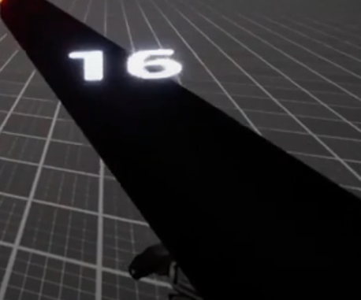
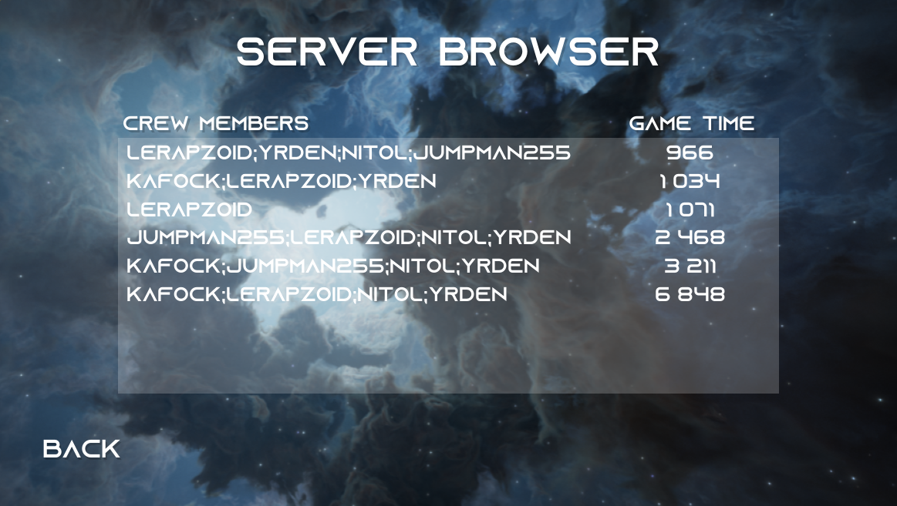

Tachyon
Technologies utilisées
- Unreal Engine 4
- C++
- UI/UX
- C#
- Docker
- AWS

Contexte
Tachyon est un jeu multijoueur en 3D réalisé dans le cadre du projet de fin d'études du DDJV, la formation en développement du jeu vidéo offerte
a l'université de Sherbrooke.
Dans ce jeu, les joueurs évoluent ensemble dans l'espace afin de détruire ensemble une menace galactique. Dans leurs périples,
les joueurs rencontrent moult obstacle tels que des vaisseaux et des créatures qui souhaitent les empêcher de mener à bien leur mission.
Le jeu est inspiré de FTL et de Barautrauma.
Nous avons réalisé ce jeu avec une équipe de 5 étudiants dans un délai de 6 mois dans lequel nous avons appris à maîtriser
l'Unreal Engine ainsi que diverses technologies notamment le Gameplay Ability System (GAS) afin d'offrir une expérience intéressante aux joueurs.
Dans ce projet, ma contribution a été principalement sur la gestion de l'UI/UX, la gestion des statistiques de jeu en parallèles de certains éléments de gameplay.
UI/UX
Notre objectif avec Tachyon étant donné que notre jeu est dans un contexte spatial étais de créer une expérience la plus immersive possible. Ceci a donc représenté un défi important pour l'UI. Un bon exemple est la gestion des munitions. L'approche classique est de mettre un compteur de munition fréquemment en bas à gauche de l'écran afin que le joueur puisse savoir combien de munition, il lui reste. Pour Tachyon, nous avons pris la décision de l'afficher comme un hologramme au-dessus de l'arme, car étant donné le contexte futuriste, il est imaginable que nos personnages aient une technologie qui sache en temps réel combien de munition, il reste dans notre arme. De cette manière, on accentue le réalisme de notre univers ce qui permet une meilleure immersion de notre joueur dans le jeu.
Leaderboard
Dans Tachyon, nous avons mis en place un classement qui met en avant les joueurs qui ont réussi avec la menace le plus rapidement possible. Celui-ci récupère le nom des membres de l'équipage ainsi que le temps qu'ils ont mis a sauver l'univers. Pour cela, nous avons utilisé un serveur AWS qui nous permet de recevoir et de stocker les temps réalisés par nos joueurs et de les afficher dans le classement.
